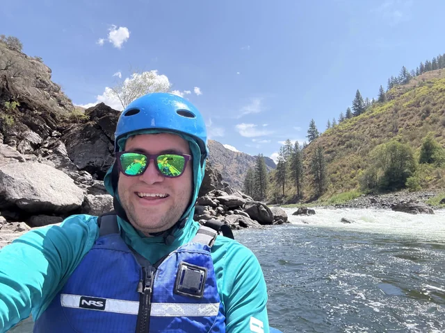

At Diani White Water Rafting, adventure is more than a trip—it’s an experience. We combine thrilling rapids, breathtaking scenery, professional guides, and a strong commitment to safety to create unforgettable moments on the water. Come paddle, explore, laugh, and discover the wild side of Kenya with us.